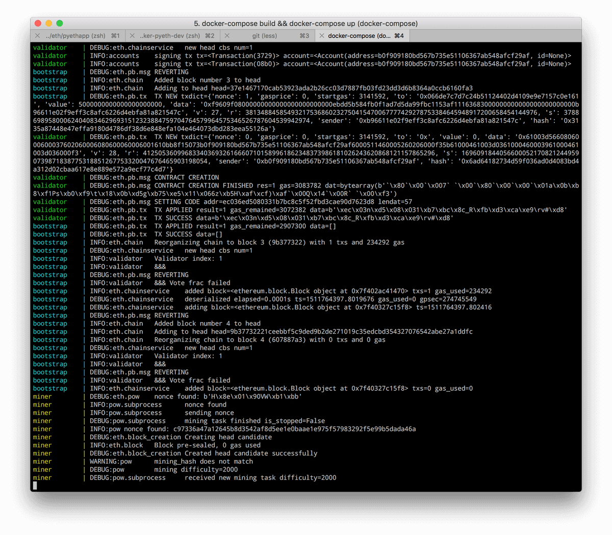

Ethereum’s Proof of Stake Casper Testnet Nears Launch
“One of the biggest upgrade in ethereum, and perhaps in the entire ecosystem, might be closer to implementation than previously thought”

One of the biggest upgrade in ethereum, and perhaps in the entire ecosystem, might be closer to implementation than previously thought, with Lane Rettig, a researcher at the Ethereum Foundation, stating:
“Casper FFG testnet is coming. We’ve got a three-node network working with two validators. Still a few bugs to work out. Whitepapers are cool and all but seeing this come to life is amazing.”
Casper‘s testnet in development
Casper Friendly Finality Gadget (FFG) is a hybrid Proof of Stake (PoS) and Proof of Work (PoW) implementation developed by Vitalik Buterin, ethereum’s inventor, and others.
This implementation is apparently sufficiently advanced to the extent it could even be incorporated in the next ethereum upgrade, Constantinople Metropolis. According to Ethnews, Buterin said:
“Theoretically, Casper may well be at the stage where we may actually just try doing it for the next fork, even if that sounds ambitious.”
There is no estimated date for the second Metropolis fork as far as we are aware. Initially, the intention was to have just one Metropolis upgrade, but some aspects were taking far too long, while much else had been finalized.
Developers therefore split it into Byzantium and Constantinople, with Byzantium going through just a few weeks ago. Constantinople is now expected next and might potentially incorporate Casper.
The Casper testnet is, as the name says, an environment where they can test the first version of PoS. That means the code is not finalized, but has taken form rather than being at the theoretical design stage.
The purpose of the testnet is to firstly ensure security and secondly to refine it fully as coders see how it works in a virtual lab environment. It is the last stage of any upgrade, before it goes to main-net, and indicates a live launch might be just months away.
When exactly, no one can quite say as no one really knows what the testnet might bring up, but optimistically we think around summer and perhaps more realistically around Autumn.
However, the Ethereum Foundation, which is now very rich indeed following considerable appreciation in eth’s price, has been expanding and increasing its resources, bringing in new developers.
Therefore, Casper seems to have moved faster than expected, with it now finalized in main aspects and moving to concrete detailed implementation, then testing, which is apparently to begin soon.
Once it is fully implemented, ethereum would benefit in a number of ways. Firstly, scalability is increased as confirmation times can be lowered. Secondly, eth itself becomes a dividend providing asset/currency/investment.
That’s because eth itself will be used for partial mining, to begin with, and then eventually full mining. With eth tokens themselves validating the network and thus replacing the huge hardware mining farms with just eth-locked laptop nodes.
That locked eth will provide interest, like a savings account, with holders transitioning towards paying themselves, if they please, rather than paying for miners, electricity, or hardware.
Which means ethereum will cease consuming limited physical resources to any significant extent. With the network becoming, as an added benefit, environmentally friendly. Potentially far more so than even banks or Visa.
Another major benefit which might be expected is increased decentralization. For the first time, a major decentralized public blockchain will pay individuals to run a node through the dividend/interest mentioned above.
As such, ordinary users will be incentivized to run a node as a profit motive will be added, unlike currently where most users run one altruistically.
More of them might opt to do so, which may also affect a fifth aspect, end user experience and scalability. The nature of PoS requires some level of continued inflation, which for ethereum will probably be at 2% or less annually.
As it is a fixed rate, it would be priced in and might even amount to effectively 0% because of lost eth, similar to how pennies get forgotten or are thrown away.
This may have major implications for the usability of eth’s blockchain, because transaction fees would be unnecessary as nodes would be incentivized through interest.
Ethereum’s public blockchain, therefore, unlike bitcoin, can scale, and can scale to very high levels, while maintaining decentralization, usability, a peer to peer nature, very fast confirmation times, virtually non-existent fees, permissionless, with dapps on top.
Making the Casper upgrade the most anticipated implementation this space has seen since bitcoin’s invention nearly a decade ago.
Source: http://www.trustnodes.com/2017/11/28/ethereums-proof-stake-casper-testnet-nears-launch
「 Declaration: Please indicate the source if repost the article in UNITIMES. Opinions expressed by Contributors belong to themselves. 」